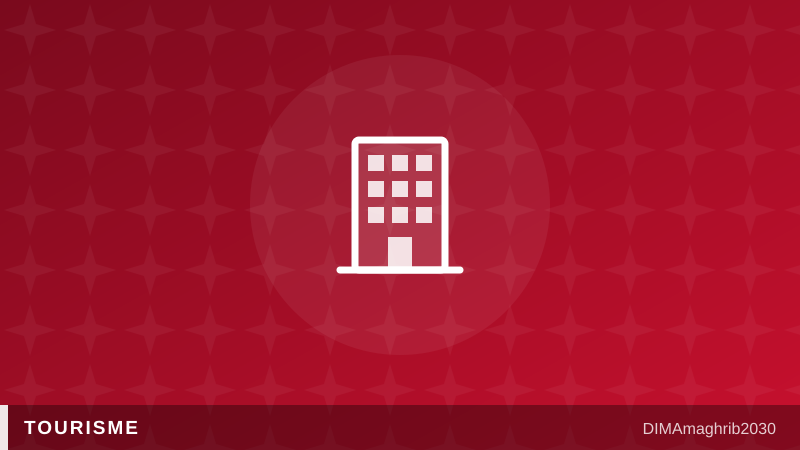

60 000 lits d'ici 2030 : le Maroc peut-il construire assez vite pour son propre succès touristique ?60,000 New Hotel Beds by 2030: Can Morocco Build Fast Enough for Its Own Tourism Boom?

Les records de fréquentation font les gros titres. Mais dans les coulisses, une autre course est engagée, plus discrète et sans doute plus décisive : celle de l'offre. Les 21 et 22 juillet, le conseil d'administration de l'Office national marocain du tourisme (ONMT) et le ministère du Tourisme ont dévoilé un plan qui résume l'ampleur du défi : ajouter 60 000 lits d'hôtel supplémentaires d'ici 2030, selon Médias24, après en avoir déjà créé 45 000 en quatre ans pour porter la capacité hôtelière du Maroc à environ 300 000 lits. La question centrale n'est plus de savoir si les touristes viendront — ils viennent déjà — mais si le pays peut bâtir les lits, les ports et les outils numériques à la hauteur de la demande qu'il a lui-même créée.
Une demande qui court plus vite que le béton
Les chiffres présentés au conseil de l'ONMT confirment un premier semestre 2026 en surchauffe : selon La Quotidienne, les arrivées progressent de 7 %, les recettes voyages bondissent de 21 % et les nuitées dans les hébergements classés gagnent 9 % à fin mai. LesEco.ma annonce par ailleurs un été 2026 en route vers un nouveau record de réservations. Autrement dit, la promotion a gagné son pari — reste à loger tout le monde.
C'est là que la capacité hôtelière Maroc 2030 devient le nerf de la guerre. Ajouter 45 000 lits en quatre ans était déjà un rythme soutenu ; en ajouter 60 000 en quatre ans supplémentaires suppose d'accélérer encore les investissements, les autorisations et les livraisons de nouveaux hôtels au Maroc dès 2026. Avec la Coupe du monde 2030 co-organisée par le Royaume en ligne de mire, chaque chantier compte : la question « où loger » pendant le Mondial se pose déjà chez les voyagistes, et la réponse dépendra des grues d'aujourd'hui.
Croisières, IA et nouveaux marchés : les paris de l'ONMT
Pour atteindre l'objectif, la stratégie de l'ONMT vise 26 millions de touristes à l'horizon 2030, en misant, selon Médias24 et Consonews, sur trois leviers : le tourisme de croisière au Maroc, l'intelligence artificielle appliquée à la promotion, et la conquête de nouveaux marchés émetteurs. Le pari croisiériste est astucieux — un paquebot amène des milliers de visiteurs sans mobiliser une seule chambre d'hôtel — mais il exige des infrastructures portuaires et des expériences à quai capables de transformer une escale de quelques heures en envie de revenir. Quant à l'IA, elle promet un marketing plus ciblé et moins coûteux, à condition que la donnée suive.
Le talon d'Achille : une croissance à deux vitesses
Reste une ombre au tableau que les professionnels ne cachent plus : la croissance du premier semestre 2026 est « inégalement répartie » entre les destinations, relève Premium Travel News dans son édition du 22 juillet. Pendant que Marrakech et Agadir affichent complet, d'autres régions peinent à capter leur part du flux. Or les 60 000 lits promis ne changeront la donne que s'ils sont construits là où le potentiel dort encore — dans les villes moyennes, sur les façades atlantique et méditerranéenne, dans l'arrière-pays. Sinon, le Maroc risque de concentrer toujours plus de visiteurs sur les mêmes territoires saturés.
Le compte à rebours est lancé : quatre ans pour bâtir un tiers de capacité en plus, équiper les ports, industrialiser le marketing digital et rééquilibrer la carte touristique du pays. La demande, elle, n'attendra pas.
The visitor records make the headlines. But behind the scenes, a quieter and arguably more decisive race is underway: the race to supply. On July 21-22, the board of the Moroccan National Tourism Office (ONMT) and the tourism ministry unveiled a plan that captures the scale of the challenge. According to Médias24, Morocco intends to add 60,000 additional hotel beds by 2030, after already creating 45,000 in four years to bring total capacity to roughly 300,000 beds. The central question is no longer whether tourists will come — they already are — but whether the country can build the beds, ports and digital tools fast enough for the demand it has itself created.
Demand Is Outrunning the Concrete
The figures presented at the ONMT board meeting confirm a red-hot first half of 2026. According to La Quotidienne, arrivals are up 7 percent, travel receipts have jumped 21 percent, and nights in classified accommodation have risen 9 percent through the end of May. LesEco.ma reports that summer 2026 bookings are heading for a new record. In short, the promotion machine has won its bet — now everyone needs somewhere to sleep.
That is why Morocco hotel investment 2030 has become the industry's defining metric. Adding 45,000 beds in four years was already a brisk pace; adding 60,000 in the next four demands even faster financing, permitting and delivery of new properties. And with the 2030 World Cup co-hosted by the Kingdom on the horizon, every construction site matters. Tour operators are already fielding the question of where to stay in Morocco for the 2030 World Cup — and the answer depends on today's cranes.
Cruises, AI and New Markets: ONMT's Big Bets
To get there, the Morocco tourism strategy for 2030 targets 26 million visitors, betting, according to Médias24 and Consonews, on three levers: Morocco cruise tourism, artificial intelligence applied to promotion, and the conquest of new source markets. The cruise wager is a clever one — a single ship delivers thousands of visitors without occupying a single hotel room — but it requires port infrastructure and shore experiences capable of turning a few hours at the quay into a reason to return. As for AI, it promises sharper, cheaper marketing, provided the data pipeline can keep up.
The Achilles' Heel: Two-Speed Growth
There is, however, a shadow the industry no longer hides. Growth in the first half of 2026 has been "unevenly distributed" between destinations, Premium Travel News noted on July 22. While Marrakech and Agadir post full occupancy, other regions struggle to capture their share of the flow. The promised 60,000 beds will only change the game if they rise where the potential still lies dormant — in mid-sized cities, along the Atlantic and Mediterranean coasts, in the interior. Otherwise, Morocco risks funnelling ever more visitors into the same saturated hubs.
The countdown has begun: four years to build a third more capacity, equip the ports, industrialise digital marketing and rebalance the country's tourism map. The demand, for its part, will not wait.